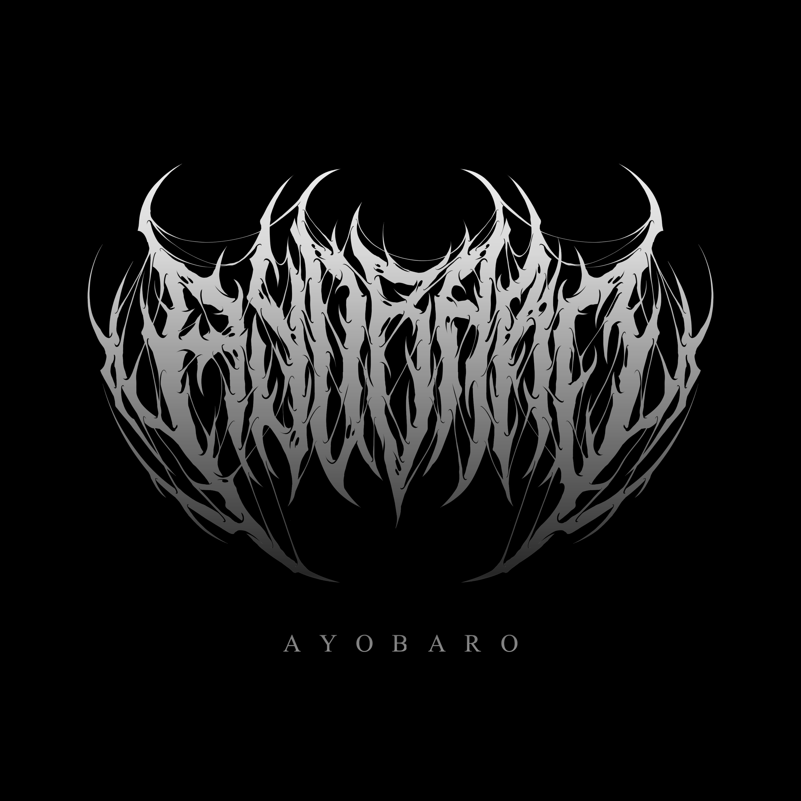

Ayobaro
Music Producer & Audio Engineer | Karlsruhe, Germany
I started making beats in 2019 and dove into audio engineering in 2023. After some hands-on time in the studio, I earned a Home & Studio Recording certificate at SAE Stuttgart and later completed a Music Business Specialization with Berklee Online to deepen my industry knowledge.
Since then, my journey’s taken me pretty far:
- My productions have charted in Sweden, including “DNA” by Dahlen & Advokaten.
- I produced Eddie Fresco’s “WORKIN”, which opened for Central Cee in Prague.
- My work has picked up millions of streams on Spotify and YouTube.
- I’ve performed live at Signature Sounds Clash in London and dropped mixes on NTS Radio’s Tim & Barry Show.
- I’ve made over 500 beats, released sample and loop kits (“Sihr” and “Samurai”), and taken part in beat battles and producer events across Europe.
This year I’m starting a Business degree in Karlsruhe to bring my creative and technical background together with a stronger understanding of the industry.
What I do:
- Beat production & composition
- Recording, mixing & mastering
- Sound design & sample creation
- Visuals & video editing (promo clips, lyric videos, live edits)
Always looking to push things forward - let’s make something unforgettable.
